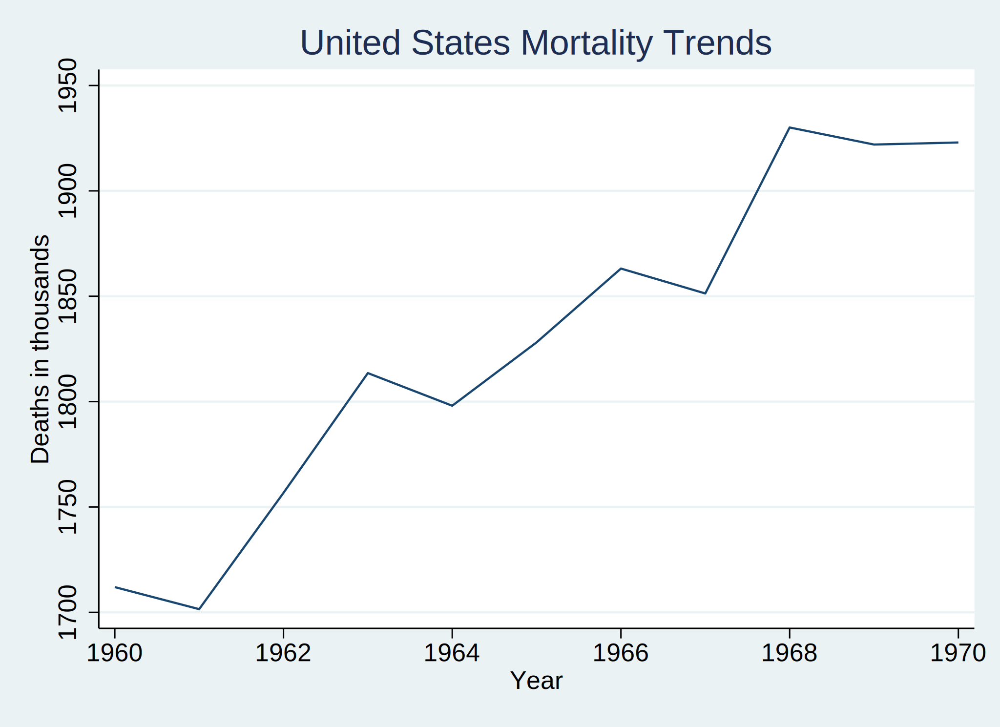

Patrick Donahue, MS Johns Hopkins Bloomberg School of Public Health
Background: We are developing skills that allow us to access publicly available large databases that may be queried to answer fundamental questions about the publics health. These datasets might exist in formats unfamiliar to Stata users or in sizes that cripple ones workflow.
In our first two weeks, we curated a dataset with all the mortality records in the United States from 1959-2017 and wrote a basic Stata script that output a two-way plot showing annual trends in number of deaths during this period. In the subsequent two weeks we wrote a Stata program, mortality, that allows the user to define the time-period of interest, plus other parameters such as cause-of-death, and ultimately produce a similar two-way plot with the convenience of a Stata command.
Our goal for the second-half of the class is to leverage this experience to give Stata users access to the entire range of NHANES surveys via a simple command, nhanes, with several user-defined options. We have not yet articulated what these options are but will do so on an emerging basis each week.
. capture program drop nhanesmort
. program define nhanesmort
1.
. syntax , [yearstart (int 4)] [yearend (int 4)]
2.
. global url https://data.nber.org/mortality/
3. clear
4. gen deaths = .
5. gen year = .
6. save mortdata, replace
7.
. forvalues i = `yearstart' / `yearend'{
8. assert inrange(`yearstart', 1959, 2017)
9. assert inrange(`yearend', 1959, 2017)
10. use "${url}`i'/mort`i'", clear
11. g deaths=1
12. collapse (count) deaths
13. gen year = `i'
14. save yr`i', replace
15. use mortdata, clear
16. append using yr`i'
17. save mortdata, replace
18.
. }
19.
. use mortdata, clear
20. line deaths year
21.
.
. end
.
. nhanesmort, yearstart(1959) yearend(1975)
(dataset contains 0 observations)
file mortdata.dta saved
file yr1959.dta saved
(variable deaths was float, now double to accommodate using data's values)
file mortdata.dta saved
file yr1960.dta saved
file mortdata.dta saved
(file yr1961.dta not found)
file yr1961.dta saved
file mortdata.dta saved
(file yr1962.dta not found)
file yr1962.dta saved
file mortdata.dta saved
(file yr1963.dta not found)
file yr1963.dta saved
file mortdata.dta saved
(file yr1964.dta not found)
file yr1964.dta saved
file mortdata.dta saved
(file yr1965.dta not found)
file yr1965.dta saved
file mortdata.dta saved
(file yr1966.dta not found)
file yr1966.dta saved
file mortdata.dta saved
(file yr1967.dta not found)
file yr1967.dta saved
file mortdata.dta saved
(file yr1968.dta not found)
file yr1968.dta saved
file mortdata.dta saved
(file yr1969.dta not found)
file yr1969.dta saved
file mortdata.dta saved
(file yr1970.dta not found)
file yr1970.dta saved
file mortdata.dta saved
(file yr1971.dta not found)
file yr1971.dta saved
file mortdata.dta saved
(file yr1972.dta not found)
file yr1972.dta saved
file mortdata.dta saved
(file yr1973.dta not found)
file yr1973.dta saved
file mortdata.dta saved
(file yr1974.dta not found)
file yr1974.dta saved
file mortdata.dta saved
(file yr1975.dta not found)
file yr1975.dta saved
file mortdata.dta saved
Methods: This current program outputs an NHANES dataset with number of deaths by year. The user indicates the first and last year they which to use, and the program will pull data from those years and all years in between.
Results: The output will plot deaths by year in a graph.
. set scheme s2color

Conclusions: Now that we have established our workflow, updates to our program will be published on a weekly basis and the URL will be sent to the student team as well as the teaching team in the first five minutes of each class session. A question not to ask: shall we ever need to annotate our .do files if we can offer much richer documentation in e-book built using .html?
Acknowledgments: We initially published our Stata output in a Jupiter-book hosted by Github. All the .html content of the book was produced in a Python environment; however, Stata .html output will gradually replace the Python-based output of the book as we truly become advanced Stata users!
VS Code terminal is our IDE choice for committing and pushing our git content to our hub and have established a seamless process for updating our publication.
References:
{kind=link}